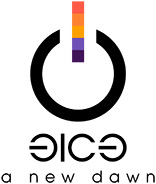

Der 31C3, also der 31. Kongress des Chaos Computer Clubs, findet jedes Jahr zwischen Weihnachten und Neujahr statt. Es gibt jedes Jahr viele interessante Vorträge, Workshops und Projekte vor Ort. Ich habe die für mich interessantesten Videos aus den Bereichen Sicherheit, Technik, Kultur und Gesellschaft in einer kleinen Liste zusammengetragen.
- Mit Kunst die Gesellschaft hacken - Das Zentrum für politische Schönheit
- Why are computers so @#!*, and what can we do about it?
- Traue keinem Scan, den du nicht selbst gefälscht hast - "Bei Kopierern kommt das raus, was man reinsteckt." – Wer das denkt, sollte diesen Vortrag besuchen.
- Security Nightmares - Damit Sie auch morgen schlecht von Ihrem Computer träumen.
- IFG – Mit freundlichen Grüßen - Neue Energie für die Informationsfreiheit
- Snowden Effect vs. Privacy Paradox - Einstellungen und Internetnutzungsverhalten im Kontext des NSA-Skandals am Beispiel von Facebook
- MegaCode to facility gates
- Open-BCI DIY-Neuroscience Maker-Art Mind-Hacking - open source DIY brain-computer-interfaces | technology and applications crash-course | "BCI Mind-Hacking" intro
- Roguelikes, and building one (ab Minute 17)
- Ich sehe, also bin ich ... Du - Gefahren von Kameras für (biometrische) Authentifizierungsverfahren
- „Wir beteiligen uns aktiv an den Diskussionen“ - Die digitale „Agenda“ der Bundesregierung aus inhaltlicher, philologischer und linguistischer Perspektive
- Crypto Tales from the Trenches
- Towards General Purpose Reconfigurable Computing on Novena - FPGAs for Everybody with Novena
- Why is GPG "damn near unusable"? - An overview of usable security research
- Freedom in your computer and in the net
- Reconstructing narratives - transparency in the service of justice
- 10 Jahre OpenStreetMap - Wir leben noch und zwar sehr gut.
- GIFs: Tod eines Mediums. Und sein Leben nach dem Tod. - Wie es kommt, dass technischer Fortschritt den Nutzern gänzlich egal sein kann.
- The Only Thing We Know About Cyberspace Is That Its 640x480 - One Terabyte of Kilobyte Age
- Funky File Formats - Advanced binary tricks